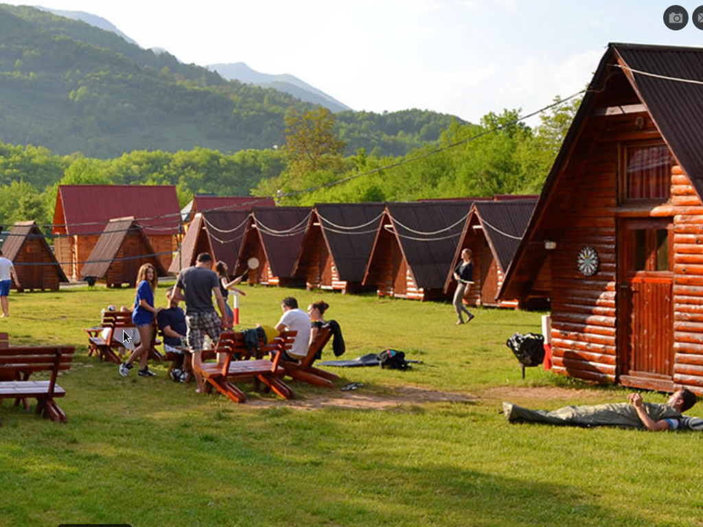

Otvoreni smo od aprila do oktobra. Rafting rekom Tarom organizujemo svaki dan. Poznati smo po odličnoj domaćoj hrani i vrhunskom noćnom provodu sa muzikom uživo.
Dobrodošli u našu oazu u srcu prirode, na obali reke Drine, gde avantura čeka svakog posetioca. Sa smeštajem u prelepim drvenim bungalovima, vaš boravak će biti udoban i opuštajući, dok istovremeno uživate u divljoj lepoti okoline. Naša ponuda aktivnosti je raznovrsna i prilagođena svim avanturistima. Za ljubitelje adrenalina, rafting rekom Tarom je nezaboravno iskustvo koje organizujemo svakodnevno. Ako tražite nešto drugačije, tu su i kanjoning, foto-safari, jahanje konja, zip-line, hiking, vožnja ATV četvorotočkaša i paintball. U našem restoranu nacionalne kuhinje možete uživati u autentičnim gurmanskim specijalitetima, pripremljenim od 100% domaćih sastojaka. Nakon uzbudljivog dana, večeri su rezervisane za vrhunski noćni provod uz muziku uživo. Budite deo naše priče i doživite nezaboravnu avanturu u prirodi sa nama. Otvoreni smo od aprila do oktobra, spremni da vam pružimo nezaboravan doživljaj. Vidimo se na obali reke Drine!
Ovdje, nadomak Foče u kanjonu Tare, koji je prirodna granica između Bosne i Hercegovine i Crne Gore, a u nesposrednoj blizini čak dva nacionalna parka NP Sutjeska i NP Durmitor, očekuje vas spoj predivne prirode, izvrsne domaćinske hrane sa ovog podneblja, nezaboravnog druženja u kampu i na outdoor aktivnostima po želji i odličnog provoda. Ono što je najbolje od svega, svoj aktivni odmor možete sami isplanirati i uvrstiti u njega sadržaje koje vi želite. Sve ove aktivnosti u prirodi uglavnom nisu intenzivne, za njih vam ne treba neko prethodno iskustvo, posebna fizička spremnost, niti obuka. Pogledajmo šta sve ovdje može da se isproba osim raftinga.
